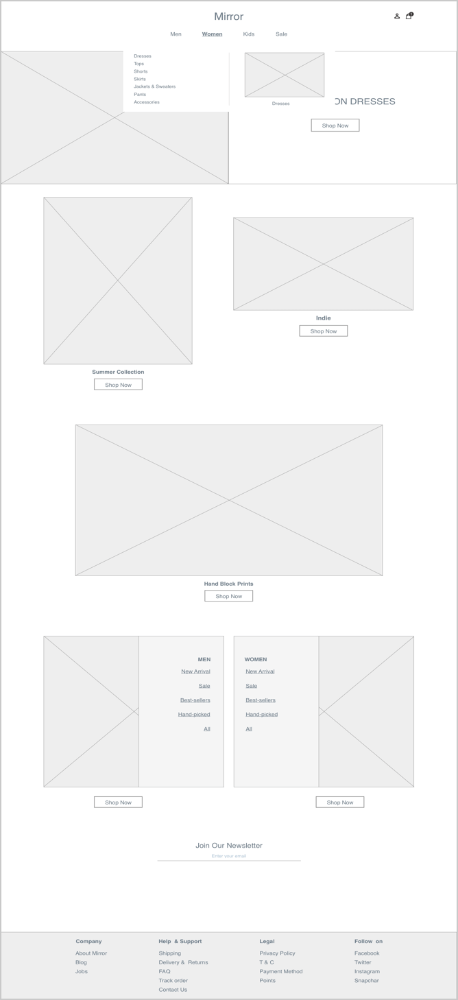
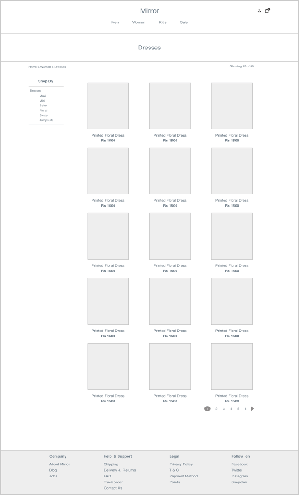
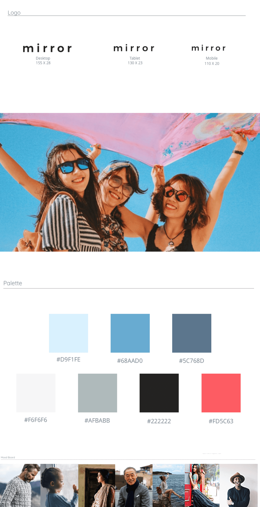
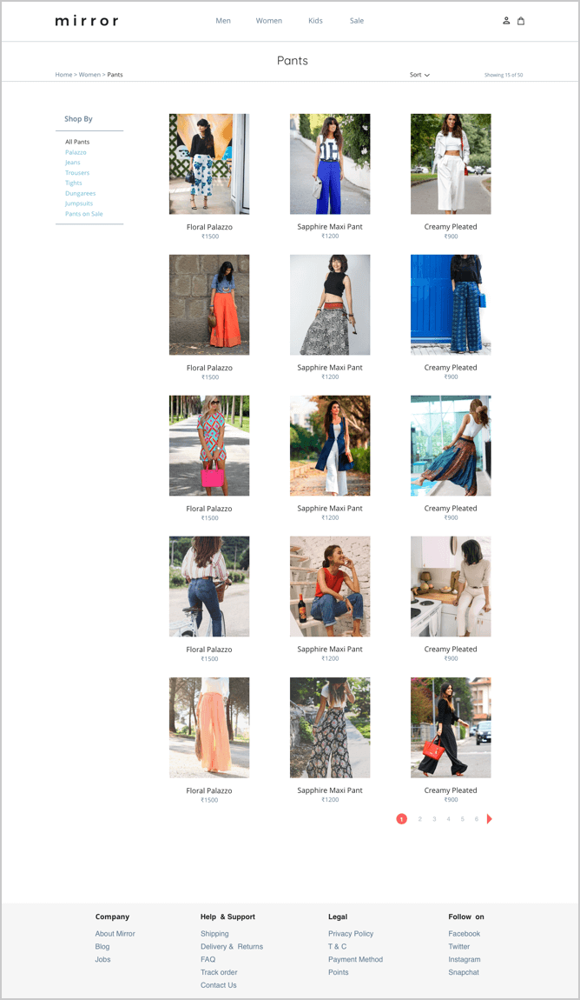

About mirror
Mirror is a fictional clothing store. Their goal is to have affordable clothes for everyone.
Mirror would like to go online to keep up with its competitors and customer requests.
A responsive e-commerce website would help Mirror leverage online sales opportunities.
RESEARCH
I conducted interviews with 5 participants within ages 20-40,
to get a better understanding of who I’m designing for.
These interviews were conducted either in person or via phone calls.
Goals:
- What drives people to buy clothes?
- What factors affect decision making and shopping satisfaction?
- What do they worry about?
key insights
“I don’t mind spending more if the dress is worth it”
Shopping for value
Although cheap clothes were the biggest motive for shopping online, users didn’t mind spending a bit more if the product deserved the price. Users were annoyed that some shops upped their regular price and pretended to sell them on discount. They even stopped trusting strike through and off prices.“I usually shop over the week and checkout when there’s free delivery or if I’m having a bad day”
Shopping over a period of time
Users shop online intermittently. For example - adding couple of tops during the 30 minute commute or adding a pant in the lunch break and so on. usually users collect clothes in their bags over a week before they checkout. This is also to reduce delivery charges.“My sister got these beautiful shoes from clarks, and I just wanted them”
Shopping is communal
The external trigger points for users are the strongest. For example - a friend wearing a beautiful dress, a sister buying from a store etc. Users like sharing products via whatsapp and asking for opinions.“This top would go really well with those earrings I bought, Maybe I could wear it to brunch this Sunday”
Scope for the Imagination
Users shop with a plan. Each clothing item is a part of a a complete ensemble of a look, or an occasion.PERSONA
Based on my research, my persona represents a young,
working professional who shops frequently.
Persona of the target user group for Mirror
EMPATHY MAP
To better understand Maya, I created an empathy map visualizing what Maya would see,
hear and think that would influence her shopping experience.
 Empathy Map for Maya
Empathy Map for Maya
STORY BOARD
I created a storyboard to illustrate shopping experiences of my persona.
These highlight some frustrations she would experience as a shopper,
along with her thought process while shopping online.
 Story Board
Story Board
strategy
sitemap
Based on results from project goals, competitor analysis and card sorts -
I organised the content of the website
 Sitemap
Sitemap
TASK & USER FLOW
I created a task and user flows for my persona.
Scenario - It’s Maya’s payday and she decides to buy a black dress
Taskflow
Userflow
INTERACTION DESIGN
Based on my identified userflows I created a wireframed prototype in InVision to test my assumptions.
RESPONSIVE WIREFRAMES
Responsive Wireframes
WIREFRAMES

Home

Product List
 Product Details
Product Details
 Product Details Expanded
Product Details Expanded
 Add To Bag
Add To Bag
 Bags
Bags
UI DESIGNS
BRANDING
The focus in on the images - bright, vibrant with of a diverse set of people.

Responsive ui screens
 Home
Home
 Menu
Menu

Product List
Product Details
 Add To Bag
Add To Bag
 Bags
Bags